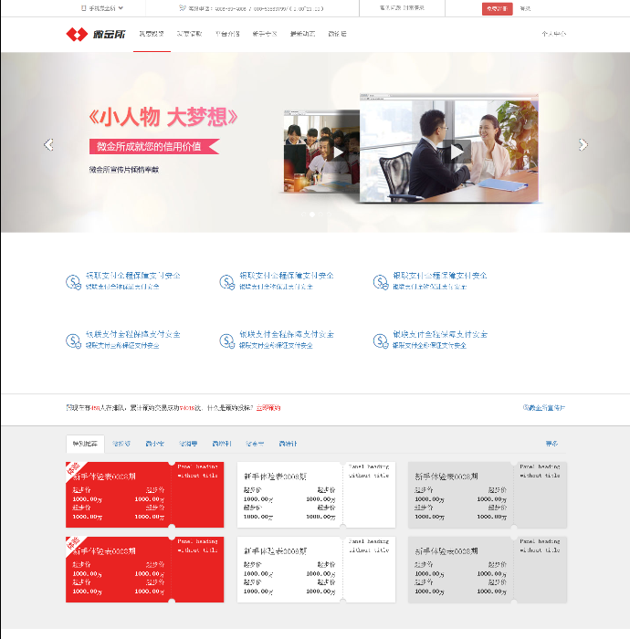
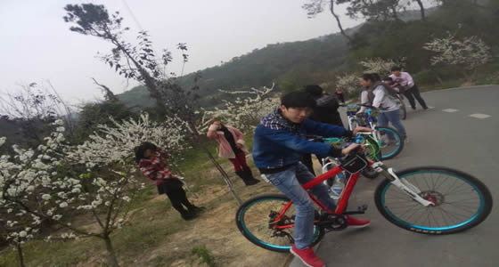
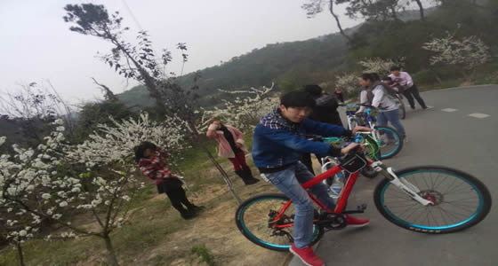

关于我和web前端
这里简单介绍下我学习前段技术的经历
2013年初，那时我正处于高三阶段，那时候的志愿是攻读电子信息科技大学，在别人都在紧张复习准备高考的时候，只因当时编程兴趣极其浓厚，我却买了一本《C语言程序设计》来自学，后来因为家庭原因，没能如愿以偿的攻读大学，但就此埋下浓厚的编程兴趣。
2016年6月开始接触前段，苦于不知如何入手，开始花钱进入中山某文培训中心，由于该培训中心教材年代偏久，前段发展时刻不断在变化，我花了1个半月学完该中心课程，却也仅仅打下入门的基础，于是又在网上搜集各种资料自学
2016年下半年主要攻专CSS3，H5以及原生Javascript。我有自己的一套学习方法，能把前端杂乱的知识体系整理的井井有条，在这半年时间内，自己每天都沉迷于技术中，除了不断的学习新技术和复习之前的知识，剩下时间每天都花大量时间看技术论坛和大神blog，自己也养成了再blog上分享笔记和心得的习惯。
在学习期间，我独立完成了若干项目的前端作品，得到了很大的成就感和满足感，工作的同时同样不放松学习。每天浏览技术论坛已经成为习惯，每周也会继续在网上找教程继续学习新知识，各种框架（jQuery，vue，bootstrap）。同时也不贪多，继续沉淀自己js的深度，因为自己知道框架再多js才是地基。
个人的项目截图
这里只展示了部分作品
- HTML页面
 CSS3运用
CSS3运用- bootstrap布局
- bootstrap布局
- bootstrap布局
- bootstrap布局
个人爱好
个人兴趣爱好
 

平时爱好除了逛技术论坛和刷大神博客之外，还有一些业余爱好，比如喜欢看书与一些推理类的小游戏（密室逃脱，案情还原），这类书籍与游戏有助于我在编程时提高严谨与细心。偶尔会玩玩大型团队合作的游戏，放松身心之时还可以提高团队合作能力。
个人的专业技能
个人web技能水平
- HTML ： ★ ★ ★ ★ ☆
- CSS ： ★ ★ ★ ★ ☆
- CSS3 ： ★ ★ ★ ★ ☆
- JS ： ★ ★ ★ ★ ☆
- jQuery： ★ ★ ★ ★ ☆
- Bootstrap： ★ ★ ★ ★ ☆
- fireworks： ★ ★ ★ ☆ ☆
1. 熟练掌握HTML，能够书写语义合理，结构清晰，易维护的HTML结构。
2. 熟练掌握CSS和CSS3，能够还原视觉设计。
3. 熟练掌握JavaScript，了解ECMAScript基础内容，掌握1~2种js框架，如JQuery bootstrap。
4. 对出现的问题有清晰的理解，有独立思考和勤于动手能力。并且找到可靠的解决方案。
5. 熟练运用fireworks、Webstorm、Chrome等常用网页设计制作软件。
6. 有自己的网站，熟练使用FTP工具上传。
7. 有自己编写简单的js库。
8. 有自己的博客，定期更新学习心得和学习笔记。
9. 熟悉SVN；可以更好的进行版本管理。
我的联系方式
欢迎来电
tel:13531878339
Wechat:1044800346
e-mail:1044800346@qq.com